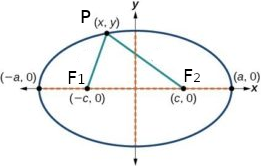

Ellisse
Assegnati due punti F1 e F2, detti fuochi, si chiama ellisse la curva piana luogo gometrico dei punti P tali che sia costante la somma delle distanze di P da F1 e da F2:
PF1 + PF2 = costante
Consideriamo, dunque, un'ellisse di fuochi F1 e F2. Il punto medio del segmento F1, F2, si chiama centro dell'ellisse. Indichiamo con
2c la distanza tra F1 e F2, detta distanza focale.
2a la somma costante delle distanze dei punti dell'ellisse dai fuochi.
Se P è un generico punto dell'ellisse, per definizione deve risultare
PF1 + PF2 = 2a E.1
Poiché in un triangolo un lato è minore della somma degli altri due, considerato il triangolo PF1F2, deve essere
PF1 + PF2 > F1F2
e quindi
2a > 2c
ossia la relazione tra a e c è
a > c
L'equazione delll'ellisse con i fuochi appartenenti all'asse x
L'equazione dell'ellisse, così come quella della parabola o della circonferenzam, è diversa a seconda della posizione della curva rispetto al sistema di riferimento.
Esaminiamo il caso in cui il centro dell'ellisse è posto nell'origine degli assi e la retta passante per F1 e F2 è l'asse x. Poiché abbiamo indicato la distanza focale con 2c, le coordinate dei fuochi sono:
F1(−c,0); F2(c, 0)
Indicato con P(x,y) un generico punto del piano, calcoliamo le distanze del punto dai fuochi:
PF1 = sqrt[(x+c)2 + y2], PF2 = sqrt[(x − c)2 + y2]
Poicé P appartiene all'ellisse se e solo se è valida la E.1, sostituendo in quest'ultima uguaglianza le espressioni di PF1 e PF2, otteniamo:
sqrt[(x + c)2 + y2] + sqrt[(x − c)2 + y2] = 2a
che è già l'equazione dell'ellisse. Cerchiamo ora di scriverla in una forma più semplice, in modo che non contenga radicali.
Isoliamo un radicale ed eleviamo entrambi i membri al quadrato:
sqrt[(x + c)2 + y2] = 2a − sqrt[(x − c)2 + y2}]
(x + c)2 + y2 = [2a − sqrt[(x − c)2 + y2]
Svolgendo i calcoli e semplificando, abbiamo
4cx = 4a2 − 4a ⋅ sqrt[(x − c) + y2]
Isoliamo il radicale e dividiamo per 4:
a ⋅ sqrt[(x − c) + y2] = a2 − cx
Eleviamo al quadrato entrambi i membri e riordiniamo i termini
(a2 −c2) x2 + a2y2 = a2(a2 − c2)
Poniamo
a2 − c2 = b2
L'equazione diventa
b2x2 + ay2 = a2 b2
Dividiamo tutti i termini per a2b2
x2/a2 + y2/b2 = 1
Questa è l'equazione canonica o normale dell'ellisse. Si ha
(a2 − c2) = b2 → a2 = b2 + c2 → a2 > b2 → a > b
Note
La circonferenza può essere considerata come una particolare ellisse. Infatti, se nell'equazione di un'ellisse abbiamo a = b, ossia a2 = b2, l'equazione diventa:
x2 + y2 = a2
Questa è l'equazione della circonferenza che ha centro nell'origine degli assi e raggio a. In questo caso c = 0, quindi i due fuochi coincidono con il centro della circonferenza.
L'eccentricità
Il rapporto tra la distanza focale e la lunghezza dell'asse maggiore di un'ellisse è detto eccentricità ed è solitamente indicato con la lettera e:
e = distanza focale/lunghezza asse maggiore
L'eccentricità e indica la forma più o meno schiacciata dell'ellisse.
Nell'ellisse con i fuochi sull'asse x la distanza è focale è 2c, mentre la lunghezza dell'asse maggiore è 2a, quindi l'eccentricit è data dal rapporto 2c/2a, ossia:
e = c/a = sqrt(a2 − b2)/a
Poiché c < a, si ha:
0 < e < 1
Se e = 0 si ha c/a = 0, cioè c = 0, i fuochi coincidono con il centro; ed essendo a2 = b2 l'equazione dell'ellisse diventa x2 + y2 = a: si ha una circonferenza con il centro l'origine e raggio a.
Se l'eccentricità aumenta, l'ellisse risulta più schiacciata sull'asse maggiore. Nel caso limite e = 1, si ha c = a (fuochi nei due vertici) e b = 0. L'ellisse, riducendosi all'asse maggiore, diventa degenere: in questo caso l'ellisse si riduce a un segmento oppure a un punto (il centro). Concludendo, per l'eccentricità vale la relazione
0 ≤ e < 1